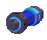

The Shield Arm is one of the more overlooked weapons in the game. Although it's different in that it's not an offensive weapon, its
defensive qualities are certainly worth a look.
Price Tag
In the first Legends game, the Shield Arm was created from the Mystic Orb and the Marlwolf Shell, and the results make it easy to see why.
Like the Marlwolf, this weapon provides the ultimate defense against almost any projectile in the game. Upgrades help out quite a bit in terms
of getting more mileage out of this weapon. Upgrading the special category makes the shield bigger, covering more of the immediate area in
front of you. The energy upgrades allow you to use this weapon for a longer duration, and you'll need this, as this weapon is a meter hog.
The overall price for this thing is only 92000z, which isn't too bad, considering the surprising utility you can get from this thing.
The Legends 2 version is made from a Shield Generator and Shielding Notes. The Shield Arm now creates a bubble-like sphere
around Megaman. The only thing you can upgrade now is the Energy, which can now be upgraded to infinite for the relatively cheap price
of 45,000z.
What it Does
As I mentioned earlier, this weapon can stop nearly any projectile in the game.
Bullets, bombs, rocket punches, fireballs, sonic waves, or missiles, this takes care of anything as long you keep the shield up. Surprisingly
enough, it even blocks those shield-breaking green plasma shots that Tiesel is so fond of. The Shield Arm works nicely on bosses as well,
particularly Bruno. Not one of his attacks are capable of breaking your absolute defense (unless you just let him step on you, which is
your own fault). As odd as it looks, it even stops Juno's Death Ball-esque attack in his second form. The only projectiles in the game that you
have to respect are ground shockwaves, such as the one that Juno's final form tosses at you.
Another interesting fact is that this weapon stops a wide variety of physical attacks. Sharukurusu, for example, get stopped right in their
tracks with the Shield Arm up. This is an excellent tool for people who get scared easily by the cloaking ones in Lake Jyun. As soon as you hear those
footsteps, just put the shield up and watch that overgrown fly smack your windshield. Guruguru are nicely flipped over so that you can toast
them with you buster. It even keeps Karunma Bash at bay! Don't get too cocky though, a Hanmuru Doll will still steamroll you if you stand in
its warpath.

One more interesting note about this weapon: when putting the shield away,
you get a slight, temporary burst in speed. With this short boost, you can run at about the speed of the Jet Skates for about a split
second. It's not overly useful, but it's fun to mess around with.
The Legends 2 version, as stated above, had its function re-done altogether now. It now creates a shot-absorbing barrier around Megaman
which can even be used while moving, and this includes rolling and jet skating! However this new upgrade hardly makes up for its devastating
weakness; it hardly blocks anything important. Most energy shots will simply pierce your barrier, as if it wasn't even there. The only things
that get blocked are Midosu's shots and Armored Sera's yellow shots. Also, in the Galgalfummi re-fight, the little Otomarn on the ground are
repelled. Another detriment is that you get this thing so late in the game, which means that you can't mess around with it too much. It
does allow you to get by Elysium's Midosu without taking any damage, however, which is an otherwise near-impossible feat.
One more thing about this weapon. After absorbing some shots, releasing the barrier causes damage to anything around Megaman. The more you
store, the more damage you release. However, even with maxed out absorption, the damage isn't too great. Think of it as a ghetto Giga Crash. The
weapon more or less fails here, seeing as it pretty much fails to protect you in any way possible. I even stepped on a vacuum reaver with this
active just to see what would happen, and lo and behold, the vacuum reaver hits me with the shield still active.
Is Roll Trying to Rip You Off?
Conclusively, the Shield Arm was a very handy (and underrated) weapon in the first game. It can be argued that most attacks can be dodged
instead of blocked (which is true), but the sheer versatility of what you can block cannot be ignored. If you're confident enough with your
buster to warrant not needing any secondary firepower, the Shield Arm is a very worthy candidate.
Legends 2 is where things go downhill. The Shield Arm is no longer the defensive juggernaut that it was, and the fact that it came so late
in the game really sealed its fate. Outside of the Midosu rematch, there's truly no where else where I can reccommend using this thing. I guess
it makes sense that something made from the Marlwolf's armor would outclass something made with a generator and some notes, but it's a shame that
this wasn't more useful.
Is the best offense truly a good defense? Maybe so. I give this weapon an 8/10 for the original version, and a 3/10
for the Legends 2 version. Keep your guard up!